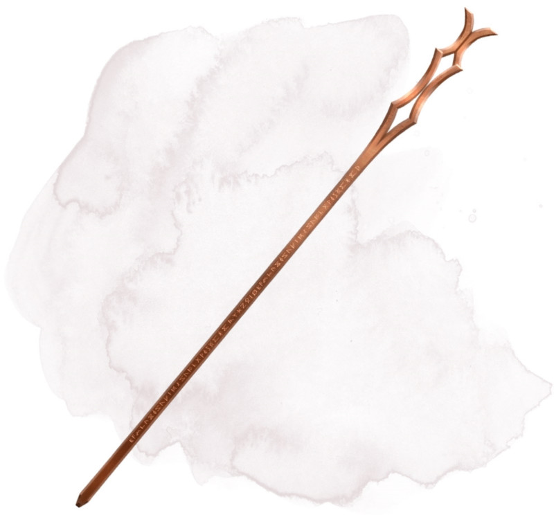

Bâton du thaumaturge
Bâton, légendaire (nécessite un lien avec un ensorceleur, un magicien ou un occultiste)
Ce bâton peut être utilisé comme un bâton (arme) magique conférant un bonus de +2 aux jets d'attaque et de dégâts effectués avec lui. Tant que vous le tenez, vous bénéficiez d'un bonus de +2 aux jets d'attaque des sorts.
Le bâton possède 50 charges pour les propriétés suivantes. Il récupère 4d6 + 2 charges dépensées chaque jour à l'aube. Si vous dépensez la dernière charge, lancez un d20. Sur un résultat de 20, le bâton récupère 1d12 + 1 charges.
Absorption de sort. Tant que vous tenez le bâton, vous avez un avantage aux jets de sauvegarde contre les sorts. De plus, vous pouvez utiliser votre réaction lorsqu'une autre créature lance un sort qui ne cible que vous. Dans ce cas, le bâton absorbe la magie du sort, annulant ses effets et récupérant un nombre de charges égal au niveau de sort absorbé. Cependant, si en faisant cela le nombre total de charges du bâton devient supérieur à 50, le bâton explose comme si vous aviez activé sa propriété Frappe vengeresse (voir ci-dessous).
Sorts. Tant que vous tenez ce bâton, vous pouvez utiliser une action pour dépenser plusieurs de ses charges afin de lancer l'un des sorts suivants depuis le bâton, vous utilisez votre propre DD au jet de sauvegarde des sorts et votre caractéristique d'incantation : invocation d'élémentaire (7 charges), dissipation de la magie (3 charges), boule de feu (emplacement de sort niveau 7, 7 charges), sphère de feu (2 charges), tempête de grêle (4 charges), invisibilité (2 charges), déblocage (2 charges), éclair (emplacement de sort niveau 7, 7 charges), passe-muraille (5 charges), changement de plan (7 charges), télékinésie (5 charges), mur de feu (4 charges), ou toile d'araignée (2 charges).
Vous pouvez également utiliser une action pour lancer l'un des sorts suivants grâce au bâton sans utiliser de charge : verrou magique, détection de la magie, agrandissement/rapetissement, lumière, main de mage ou protection contre le mal et le bien.
Frappe vengeresse. Vous pouvez utiliser une action pour briser le bâton contre votre genou ou contre une surface solide, déclenchant alors la frappe vengeresse. Le bâton est détruit et libère la magie qui lui reste en une formidable explosion qui recouvre une zone sphérique de 9 mètres de rayons centrée sur lui.
Vous avez 50 % de chance de voyager instantanément vers un plan d'existence aléatoire, échappant alors à l'explosion. Si vous ne parvenez pas à éviter l'effet, vous subissez un montant de dégâts de force égal à 16 x le nombre de charges dans le bâton. Toutes les autres créatures dans la zone doivent effectuer un jet de sauvegarde de Dextérité DD 17. En cas d'échec au jet de sauvegarde, une créature subit un montant de dégâts basé sur la distance entre elle et l'épicentre de l'explosion, comme indiqué sur la table ci-dessous. En cas de jet de sauvegarde réussi, une créature ne subit que la moitié des dégâts prévus.
Le bâton possède 50 charges pour les propriétés suivantes. Il récupère 4d6 + 2 charges dépensées chaque jour à l'aube. Si vous dépensez la dernière charge, lancez un d20. Sur un résultat de 20, le bâton récupère 1d12 + 1 charges.
Absorption de sort. Tant que vous tenez le bâton, vous avez un avantage aux jets de sauvegarde contre les sorts. De plus, vous pouvez utiliser votre réaction lorsqu'une autre créature lance un sort qui ne cible que vous. Dans ce cas, le bâton absorbe la magie du sort, annulant ses effets et récupérant un nombre de charges égal au niveau de sort absorbé. Cependant, si en faisant cela le nombre total de charges du bâton devient supérieur à 50, le bâton explose comme si vous aviez activé sa propriété Frappe vengeresse (voir ci-dessous).
Sorts. Tant que vous tenez ce bâton, vous pouvez utiliser une action pour dépenser plusieurs de ses charges afin de lancer l'un des sorts suivants depuis le bâton, vous utilisez votre propre DD au jet de sauvegarde des sorts et votre caractéristique d'incantation : invocation d'élémentaire (7 charges), dissipation de la magie (3 charges), boule de feu (emplacement de sort niveau 7, 7 charges), sphère de feu (2 charges), tempête de grêle (4 charges), invisibilité (2 charges), déblocage (2 charges), éclair (emplacement de sort niveau 7, 7 charges), passe-muraille (5 charges), changement de plan (7 charges), télékinésie (5 charges), mur de feu (4 charges), ou toile d'araignée (2 charges).
Vous pouvez également utiliser une action pour lancer l'un des sorts suivants grâce au bâton sans utiliser de charge : verrou magique, détection de la magie, agrandissement/rapetissement, lumière, main de mage ou protection contre le mal et le bien.
Frappe vengeresse. Vous pouvez utiliser une action pour briser le bâton contre votre genou ou contre une surface solide, déclenchant alors la frappe vengeresse. Le bâton est détruit et libère la magie qui lui reste en une formidable explosion qui recouvre une zone sphérique de 9 mètres de rayons centrée sur lui.
Vous avez 50 % de chance de voyager instantanément vers un plan d'existence aléatoire, échappant alors à l'explosion. Si vous ne parvenez pas à éviter l'effet, vous subissez un montant de dégâts de force égal à 16 x le nombre de charges dans le bâton. Toutes les autres créatures dans la zone doivent effectuer un jet de sauvegarde de Dextérité DD 17. En cas d'échec au jet de sauvegarde, une créature subit un montant de dégâts basé sur la distance entre elle et l'épicentre de l'explosion, comme indiqué sur la table ci-dessous. En cas de jet de sauvegarde réussi, une créature ne subit que la moitié des dégâts prévus.
| Distance par rapport à l'origine | Dégâts |
|---|---|
| 3 m ou moins | 8 x le nombre de charges dans le bâton |
| Plus de 3 m, jusqu'à 6 m | 6 x le nombre de charges dans le bâton |
| Plus de 6 m, jusqu'à 9 m | 4 x le nombre de charges dans le bâton |
Dungeon Master´s Guide (SRD)
